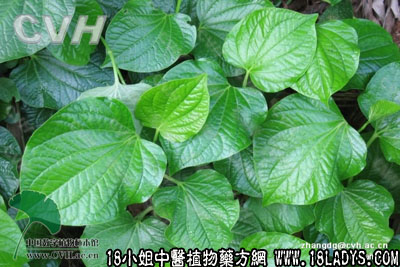

别名：追博蒟、臭蒟、毕拔。
植物名：假蒟。
生长环境：本品为草本或亚灌木。生于村边、密林较阴湿的地方，有时亦生于荒芜地上。
分布：我国南部各省均有分布。
入药部分：全草。
采集期：夏秋。
自采地点：荒地。
性味：性温、味微辛、甘。
功能：祛风、消肿、行气、利水。
主治、用量和用法：1、水肿：用生叶4量，擂烂取汁，加米煮为甜糊食。或擂烂取汁加米粉煎饼食；又或用生叶八两，擂取汁，加如米、水煮饭，用糖送食，戒盐；2、风瘼：生用全草，煎水外洗。
附录：（子）名毕拔。治风火牙痛，干用5钱，清水煎，含漱用。
参考资料：《广州常用草药验方集解》治疗皮肤湿热经验方：假蒟、老虎脷、毛麝香、入地金牛、小飞扬、乌栖叶、每味1至2两，煎水，洗患处。有疏风、去湿、清热、解毒作用。
（方解）皮肤湿热，可生疮疖、丘疹、湿疹、红肿痛，湿痕化脓等症。本方以假蒟、毛麝香祛风消肿，乌栖、金牛清热解毒，飞扬收敛水湿，老虎脷止痕痒，故能治皮肤湿热引起之疾患。
（方歌）皮肤湿热用假蒟，毛麝金牛虎脷收，小飞扬合乌栖叶，煎洗疏风解毒优。